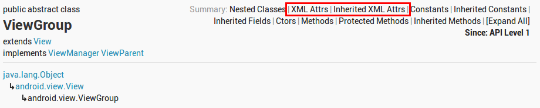
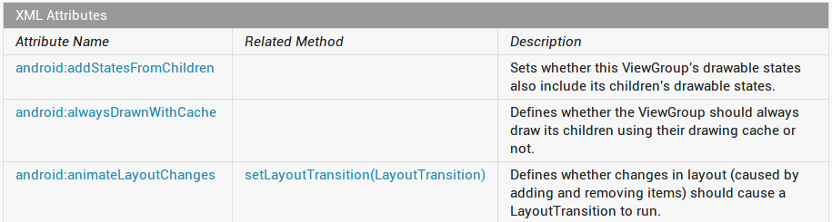

開始之前，必須先把 Android SDK、Eclipse + ADT 等先安裝好。
建立新專案時要提供：
-
Application Name - 使用者在 Google Play 上會看到的名稱，例如
My First App。 -
Project Name - 也就是 Eclipse 專案資料夾的名稱，因此建議不要有空白，例如
MyFirstApp。 -
Package Name - 這個 app 的 package namespace，採 Java package 的命名規則。由於 package name 在同一支手機裡或 Google Play 上都不能重複，建議將 domain name 顛倒過來做為開頭，例如
com.example.myfirstapp。 -
Build SDK - 這跟 compile 時要用的 platform 版本或 Jar 檔有關 。通常這個版號越大越好，當程式執行在新 platform 時才啟用某些功能，不但可以繼續支援舊的 platform，對新的 platform 也可以提供更好的體驗。
-
Minimum Required SDK - 這個 app 至少要跑在哪個 API level 版本之上。通常這個版號越小越好，才能支援更多的裝置；除非某些必要的功能（core feature set）在特定版本後才支援。
快速製作適用於不同 screen density 的 launcher icon：
選定一個 activity template，並完成一些基本的設定：
一開始就會看到 ADT 提供的 WYSIWYG 開發環境 - Graphical Layout Editor：
一開始的專案目錄結構如下：
MyFirstApp/
|-- AndroidManifest.xml  |-- proguard-project.txt
|-- project.properties
|-- assets
|-- bin
|-- gen
|-- proguard-project.txt
|-- project.properties
|-- assets
|-- bin
|-- gen  | `-- com
| `-- example
| `-- myfirstapp
| |-- BuildConfig.java
| `-- R.java
|-- ic_launcher-web.png
|-- libs
| `-- android-support-v4.jar
|-- res
| `-- com
| `-- example
| `-- myfirstapp
| |-- BuildConfig.java
| `-- R.java
|-- ic_launcher-web.png
|-- libs
| `-- android-support-v4.jar
|-- res  | |-- drawable-hdpi
| |-- drawable-hdpi  | | |-- ic_action_search.png
| | `-- ic_launcher.png
| |-- drawable-ldpi
| | `-- ic_launcher.png
| |-- drawable-mdpi
| | |-- ic_action_search.png
| | `-- ic_launcher.png
| |-- drawable-xhdpi
| | |-- ic_action_search.png
| | `-- ic_launcher.png
| |-- layout
| | |-- ic_action_search.png
| | `-- ic_launcher.png
| |-- drawable-ldpi
| | `-- ic_launcher.png
| |-- drawable-mdpi
| | |-- ic_action_search.png
| | `-- ic_launcher.png
| |-- drawable-xhdpi
| | |-- ic_action_search.png
| | `-- ic_launcher.png
| |-- layout  | | `-- activity_main.xml
| |-- menu
| | `-- activity_main.xml
| |-- values
| | `-- activity_main.xml
| |-- menu
| | `-- activity_main.xml
| |-- values  | | |-- dimens.xml
| | |-- strings.xml
| | `-- styles.xml
| |-- values-large
| | `-- dimens.xml
| |-- values-v11
| | `-- styles.xml
| `-- values-v14
| `-- styles.xml
`-- src
| | |-- dimens.xml
| | |-- strings.xml
| | `-- styles.xml
| |-- values-large
| | `-- dimens.xml
| |-- values-v11
| | `-- styles.xml
| `-- values-v14
| `-- styles.xml
`-- src  `-- com
`-- example
`-- myfirstapp
`-- MainActivity.java
`-- com
`-- example
`-- myfirstapp
`-- MainActivity.java| 所有 app 相關的設定幾乎都是寫在這個 menifest file 裡。 | |
主要的程式碼都放在 src/ 裡，例如 MainActivity.java。
| |
編譯過程中自動產生的程式碼都放在 gen/ 裡，其中包括最常被提及的 R.java。
| |
res/ 底下每個資料夾都存放不同型態的 app resource，也可以針對不同的情況（螢幕大小、密度、語言、API Level 等）分別做客製化。
| |
drawable-xxx 分別存放適用於不同 density 的 drawable object，例如圖檔。
| |
UI 的編排存放在 layout/ 裡，例如 layout/activity_main.xml。
| |
文字、設計（style）則存放在 values/ 或 values-xxx` 裡，例如 values/strings.xml。
|
AndroidMenifest.xml<manifest xmlns:android="http://schemas.android.com/apk/res/android"
package="com.example.myfirstapp"
android:versionCode="1"
android:versionName="1.0" >
<uses-sdk
android:minSdkVersion="8"
android:targetSdkVersion="15" />
<application
android:icon="@drawable/ic_launcher"
android:label="@string/app_name"
android:theme="@style/AppTheme" >
<activity
android:name=".MainActivity"
android:label="@string/title_activity_main" >
<intent-filter>
<action android:name="android.intent.action.MAIN" />
<category android:name="android.intent.category.LAUNCHER" />
</intent-filter>
</activity>
</application>
</manifest>| 將 activity 註冊成 launcher activity，要被顯示在 home screen，做為 app 的起點。 |
MainActivity.javapackage com.example.myfirstapp;
import android.os.Bundle;
import android.app.Activity;
import android.view.Menu;
import android.view.MenuItem;
import android.view.View;
import android.support.v4.app.NavUtils;
public class MainActivity extends Activity {
@Override
public void onCreate(Bundle savedInstanceState) {
super.onCreate(savedInstanceState);
setContentView(R.layout.activity_main);
}
@Override
public boolean onCreateOptionsMenu(Menu menu) {
getMenuInflater().inflate(R.menu.activity_main, menu);
return true;
}
}
載入 res/layout/activity_main.xml 做為這個 activity 的內容。
|
在專案上按右鍵，選 Run As > Android Application，就會自動包裝出 debuggable 的 MyFirstApp.apk，並將它安裝到連接的 device 或運行中的 emulator。（如果當時有多個 device/emulator，就會跳出來詢問要採用哪個 device/emulator）
[2012-08-25 06:45:35 - MyFirstApp] ------------------------------
[2012-08-25 06:45:35 - MyFirstApp] Android Launch!
[2012-08-25 06:45:35 - MyFirstApp] adb is running normally.
[2012-08-25 06:45:35 - MyFirstApp] Performing com.example.myfirstapp.MainActivity activity launch
[2012-08-25 06:45:36 - MyFirstApp] Automatic Target Mode: using device 'HT142TJ06210'
[2012-08-25 06:45:36 - MyFirstApp] Uploading MyFirstApp.apk onto device 'HT142TJ06210'
[2012-08-25 06:45:36 - MyFirstApp] Installing MyFirstApp.apk...
[2012-08-25 06:45:41 - MyFirstApp] Success!
[2012-08-25 06:45:41 - MyFirstApp] Starting activity com.example.myfirstapp.MainActivity on device HT142TJ06210
[2012-08-25 06:45:43 - MyFirstApp] ActivityManager: Starting: Intent { act=android.intent.action.MAIN cat=[android.intent.category.LAUNCHER] cmp=com.example.myfirstapp/.MainActivity }
UI 由階層化的 View (android.view.View) 與 ViewGroup (android.view.ViewGroup) 組成（ViewGroup 繼承自 View）。通常 view 是看得見或可以操作的 UI 組件（widget），而 view group 則是看不見的 view container，負責下層 child view 的 layout （反過來說，view container 就是 child view 的 parent view）。最頂層的 view 我們稱做 root view：
這樣的階層關係，可以直接從 activity_main.xml 的內容看出來：
<RelativeLayout xmlns:android="http://schemas.android.com/apk/res/android"
xmlns:tools="http://schemas.android.com/tools"
android:layout_width="match_parent"
android:layout_height="match_parent" >
<TextView
android:layout_width="wrap_content"
android:layout_height="wrap_content"
android:layout_centerHorizontal="true"
android:layout_centerVertical="true"
android:padding="@dimen/padding_medium"
android:text="@string/hello_world"
tools:context=".MainActivity" />
</RelativeLayout>
RelativeLayout 就是個 view group，目前裡面只有一個 child view。
其中 | |
TextView (android.widget.TextView) 就是個 view，用來顯示文字。
| |
相對於 match_parent 而這，這裡的 wrap_content 指的是配置 “足以顯示內容“ 的大小即可。
| |
文字的內容來自 res/values/strings.xml 裡 hello_world 的定義。
開頭的 | |
為什麼要額外用 tools:context 設定 context？這是 RelativeLayout 特有的嗎？
|
|
|
Android 提供了很多 XML vocabulary 直接跟 view 或 view group 對應。除了 editor 提供自動完成之外，要知道某個 view 支援哪些 attribute，可以查看 reference 的 XML Attributes 跟 Inherited XML Attributes 兩節：

至於常用的

另外 XML attribute name 通常都有對應的 property setter。 |
按下來我們要將 My First App 改寫成下面這個樣子：
首先將 root view RelativeLayout 換成 LinearLayout：
<LinearLayout xmlns:android="http://schemas.android.com/apk/res/android"
xmlns:tools="http://schemas.android.com/tools"
android:layout_width="match_parent"
android:layout_height="match_parent"
android:orientation="horizontal" >
用 android:orientation 來決定 child view 的走向。
|
|
|
本來想用 Graphical Layout Editor (ADT v20 + API 16) 來完成畫面的配置，沒想到把 Plain Text 拖進畫面後就出現 "java.util.LinkedHashMap.eldest()Ljava/util/Map$Entry;" 的錯誤，顯然 WYSIWYG 的開發環境目前還不是很完善。 目前可以按照這裡的說明，在 |
將 TextView 換成可以輸入文字的 EditText (android.widget.EditText)：
<EditText android:id="@+id/edit_message"
android:layout_width="wrap_content"
android:layout_height="wrap_content"
android:hint="@string/edit_message" />
<Button
android:layout_width="wrap_content"
android:layout_height="wrap_content"
android:text="@string/button_send" />
@ 一樣是用來參照某個 resource object，但後面跟著 + 則表示要 “宣告／建立“ 一個 resource ID，之後從程式碼裡才能藉由 R.id.xxx 引用到這個 view。
| |||
android_hint 用來設定沒有輸入任何文字時，背影要顯示的提示文字。
把畫面上會用到的文字都提出成 string resource，方便未來做 localization (L10N)。 另外雖然 |
此時，editor 會警告 @string/edit_message 跟 @string/button_send 都不存在：
只要到 res/values/strings.xml 加以定義即可：（事先把 resource 建立好，編輯 XML 時透過自動完成來選取，會更有感覺）
<resources>
<string name="app_name">My First App</string>
<string name="hello_world">Hello world!</string>
<string name="edit_message">Enter a message</string>
<string name="button_send">Send</string>
<string name="menu_settings">Settings</string>
<string name="title_activity_main">MainActivity</string>
</resources>
把 hello_world 拿掉，已經用不到了。
| |
加上 edit_message 與 button_send 兩個 string resource。
|
目前畫面看起來像是：
顯然按鈕右側還有一些多餘的空白。透過下面的調整，可以把剩下的位置都分給文字輸入框：
<EditText android:id="@+id/edit_message"
android:layout_width="0dp"
android:layout_height="wrap_content"
android:layout_weight="1"
android:hint="@string/edit_message" />
Linear layout 支援 weight 的概念，可以用來決定怎麼分配（特定走向）剩餘的空間。由於右側按鈕的 weight 沒有設定，維持預設值是零，所以只要將 EditText 的 android:layout_weight 調整成非零值，就可以分配到所有剩餘的空間。
| |
為了 layout efficiency，將 android:layout_width 設為 0dp（這裡的 dp 指的是 density-independent pixel）。
如果 |
調整過後的畫面：

接下來，我們要讓 Send 按鈕被按下時，開出另一個畫面來顯示文字輸入框的內容。
<Button
android:layout_width="wrap_content"
android:layout_height="wrap_content"
android:text="@string/button_send"
android:onClick="sendMessage" />
用 android:onClick 宣告按鈕被按下時要呼叫 activity 的哪個方法。
|
在開始說明 sendMessage() 之前，先建立另一個 DisplayMessageActivity（File > New > Other… > Android > Android Activity）：
會自動在 AndroidMenifest.xml 加入這個 activity 的宣告：
<activity
android:name=".DisplayMessageActivity"
android:label="@string/title_activity_display_message" >
<meta-data
android:name="android.support.PARENT_ACTIVITY"
android:value="com.example.myfirstapp.MainActivity" />
</activity>回到 MainActivity 的 sendMessage()，透過 intent 將訊息內容送往 DisplayMessageActivity：
MainActivity public final static String EXTRA_MESSAGE = "com.example.myfirstapp.MESSAGE";
public void sendMessage(View view) {
EditText edit_message = (EditText)findViewById(R.id.edit_message);
String message = edit_message.getText().toString()
Intent intent = new Intent(this, DisplayMessageActivity.class);
intent.putExtra(EXTRA_MESSAGE, message);
startActivity(intent);
}
做為 event handler 的 method，其 signature 有一些要求－必須是 public、沒有回傳值（void）、只接受一個型態為 android.view.View 的參數。
| |
findViewById() 透過 id resource object 取得 view，藉以取得輸入的文字。另外 EditText.getText() 是傳回 Editable (android.text.Editable)，所以才需要再用 toString() 取得字串內容。
| |
|
Intent 可以在不同 app component 之間傳遞資訊；在這裡用來開啟另一個 activity，並挾帶一些資訊。
至於第二個參數則是指定要將這個 intent 傳遞給某個 app component，所以這裡帶入另一個 activity | |
Intent 還可以挾帶 key-value pairs （稱做 extras），然後用 startActivity(intent) 告訴系統你要啟動另一個 activity。
|
在 startActivity(intent) 的另一邊，系統負責生成 DisplayMessageActity 的 instance 之後，就會呼叫它的 onCreate()，這裡除了一般初始化的工作之外，也可以取得 intent 的內容：
DisplayMessageActivity @Override
public void onCreate(Bundle savedInstanceState) {
super.onCreate(savedInstanceState);
Intent intent = getIntent();
TextView view = new TextView(this);
view.setText(intent.getStringExtra(MainActivity.EXTRA_MESSAGE));
view.setTextSize(40);
setContentView(view);
}
getIntent() 可以取得啟動這個 activity 的 intent。
| |
這裡我們不用 XML 來做 layout，而是用程式生成一個 TextView 做為 root view。也因此可以將 activity_display_message.xml 刪除。
|